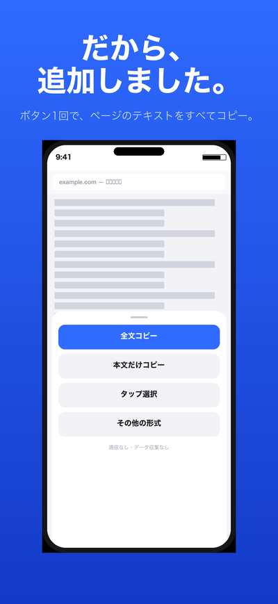
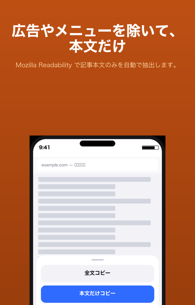
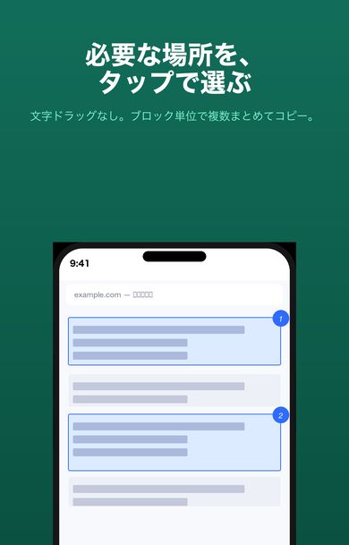
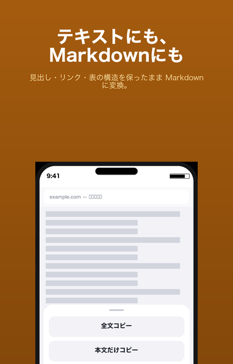

はじめに：拡張機能の有効化
初回のみ、設定アプリで拡張機能を有効にする必要があります。
- iPhoneの設定アプリを開く
- アプリ → Safari → 拡張機能 をタップ
- 「全文コピー」をオンにする
- 「すべてのWebサイトで許可」を選ぶ（ボタンを押したページだけに動作します）
1. 全文コピー

Safari上で読み取れるテキストをまとめてコピー
ポップアップの「全文コピー」ボタンを押すだけで、Safari上で読み取れるページのテキストをまとめてクリップボードへコピーします。
- コピー後に文字数と内容のプレビューを表示します
- ページ上でテキストを選択していた場合は、その選択範囲を優先してコピーします
- 50,000文字を超えるページは、処理前に確認を表示します
2. 本文だけコピー

広告・メニュー・フッターを除いて記事だけ取り出す
Mozilla Readabilityを使って、ページから記事本文だけを抽出してコピーします。ニュース記事や技術ブログのコピーに適しています。
- 広告、ナビゲーション、フッターなどを自動で除去
- 本文の判別ができなかった場合は、全文コピーへ自動でフォールバック
- フォールバックが発生した場合はプレビューで通知します
3. タップ選択

必要な領域だけをタップで選んでコピー
指でドラッグして文字を選ぶのとは別のアプローチです。ページ上の意味的なブロックをタップで選択し、複数まとめてコピーできます。
- タップで選択、再タップで解除。複数領域を選択順にコピー
- 長押しで親要素・子要素の候補を切り替え可能
- 画面下部の「コピー」ボタンで選択領域を一括コピー
- 終了時にページへの変更をすべて元に戻します
4. その他の形式
ポップアップの「その他の形式」を開くと、以下の機能が使えます。

Markdownでコピー
見出し、リンク、リスト、表、コードブロックの構造を保ったままMarkdown形式でコピーします。
AI用コピー
本文・タイトル・URLに指示文を組み合わせ、AIチャットへ貼り付けやすい形式に端末内で整形します。外部への送信は行いません。
クリーンコピー
Cookie通知、共有ボタン、購読案内、重複メニューなどを整理してコピーします。Mozilla Readabilityとは別のルールベース処理です。
設定
ポップアップの設定アイコンから開けます。
- URLの付加：コピー結果の末尾にURL、または先頭にタイトルとURLを付けるか選べます（初期値：付けない）
- AI用コピーのURL：AI用コピーではURLを初期で付加します（コピー前に無効化可能）
よくある質問
拡張機能アイコンが表示されません
設定アプリ → アプリ → Safari → 拡張機能 で「全文コピー」がオンになっているか確認してください。有効にするとアドレスバー右端の「ª」アイコン内に表示されます。
「コピーできません」と表示される
SafariのスタートページやApp Storeページなどの内部ページ、PDFビューアではご利用いただけません。また、ページの読み込みが完了していない場合も失敗することがあります。
本文だけコピーで内容が少なくなりすぎる
本文の判別には限界があります。記事以外のページ（ECサイト、ポータルなど）では「全文コピー」または「タップ選択」をお使いください。
コピーした文字数が表示される文字数と実際の文字数が違う
表示される文字数は、空白や改行の正規化後の文字数です。コピー後のアプリによっては改行の扱いが異なる場合があります。
ログインが必要なページで取得できない
ログイン後に遅延読み込みされるコンテンツや、Shadow DOMを使ったページの一部は取得できない場合があります。取得できた範囲でコピーし、不足する部分はプレビューから確認してください。
広告なし・無料の理由は？
日常のコピー操作を簡単にする小さなユーティリティーとして提供しています。広告、解析、アカウント登録、外部通信はありません。将来にわたって無料を維持する方針です。
履歴は保存されますか？
保存しません。コピーした内容はクリップボードに書き込まれるだけです。設定値（URLの付加など）のみ端末内に保存します。
お問い合わせ
不具合のご報告・ご要望・ご質問は、以下のメールまでお気軽にどうぞ。日本語・英語で対応します。